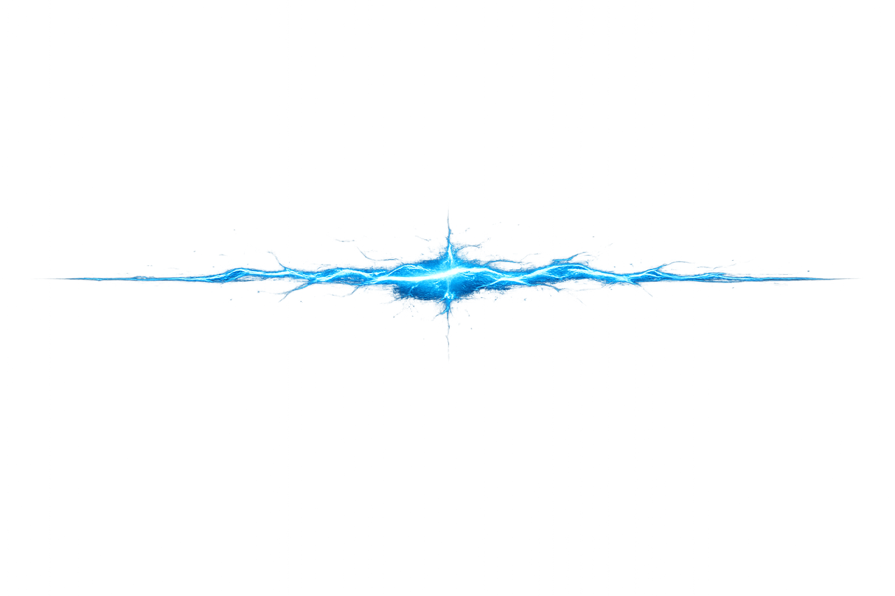
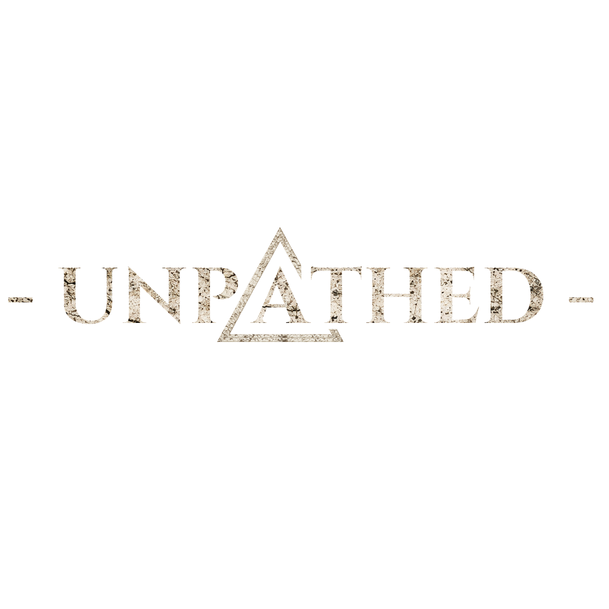

Riftworks - Développeur de jeux vidéo indépendant
STUDIO
Je suis un développeur solo derrière Riftworks. Après plusieurs années à créer des projets en modding, j’ai choisi de passer sur Unreal Engine pour repousser mes limites et donner une véritable liberté à mes idées.
Aujourd’hui, je cherche à créer des expériences à part entière : des mondes issus de mon imagination, auxquels je donne vie. Pour moi, créer des mods ou des jeux, c’est donner forme à des lieux dans lesquels je me projette, et permettre aux joueurs — ou simplement aux rêveurs — la possibilité d’explorer de nouveaux mondes.


UNPATHED
UNPATHED est un action-RPG centré sur l’atmosphère, la tension et l’exploration de mondes brisés. Le joueur progresse à travers des environnements instables, où chaque avancée demande attention, adaptation et une véritable lecture du danger. L’univers s’articule autour de failles et de zones fragmentées, avec une progression organique plutôt que linéaire. L’objectif est de proposer une expérience atypique, exigeante et immersive, portée par une identité visuelle forte et un véritable sens du mystère.
CONTACT
Pour suivre le projet, découvrir les prochaines avancées ou me contacter :